Chapter 14 因子投资（Factor Investing）
核心问题：相对于平均投资者，你在每种因子的"坏时期"中承受损失的能力有何不同？这决定了你应该持有哪些因子、持有多少。
§1 被动-激进的挪威：一切的起点
背景
挪威政府养老基金（Norwegian Government Pension Fund—Global）成立于1990年，投资北海油气收入。到2012年底规模达 $6500 亿美元，人均超过 $13 万美元，比挪威全年GDP还大。管理人是 Norges Bank Investment Management（NBIM），财政部提供基准。
危机中发生了什么？
Figure 14.1 画了两条线：基金整体的累积收益和主动管理的累积收益，时间跨度 2007年1月到2009年9月。
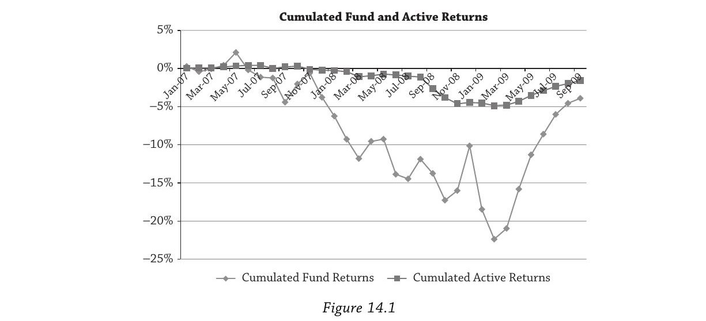
基金整体累积收益在2008年10月（雷曼倒闭后一个月）跌到约 $-17%$，2009年2月触底约 $-22%$，之后逐步回升。
挪威人对整体亏损并不太愤怒。 议会经过漫长讨论才把股票配置从 $0%$ 提到 $40%$（1998年）再到 $60%$（2007–09年间），公众充分知晓持有大量股票意味着可能遭受大额亏损，而长期回报会高于债券。这是一个知情的、有意识的风险承担决策。
真正让挪威人愤怒的是什么？
主动收益（active return）——即基金收益减去基准收益：
$r_{\text{active}} = r - r_{\text{bmk}}$
Figure 14.1 显示，主动管理的累积收益在危机最严重时跌到了约 $-5%$。公众的期待是：既然NBIM的基金经理拿着远高于普通公务员的薪水，主动管理应该稳定地创造价值，至少不该在危机中雪上加霜。于是舆论质疑：是否应该取消主动管理，改用低成本指数基金被动管理？
"教授报告"
财政部没有在舆论压力下立刻撤销NBIM的主动管理授权，而是委托了一项为期四个月的深度研究——由 Ang（本书作者）、Goetzmann（耶鲁）、Schaefer（伦敦商学院）三人完成，即所谓的"教授报告"（Ang, Goetzmann, and Schaefer, 2009）。
核心发现：NBIM在危机前、中、后的主动收益，大部分可以被系统性因子解释。 挪威收集这些因子风险溢价在长期是合理的——它们正是对危机中亏损的补偿。问题不在于承担了这些风险，而在于：
- 这些因子敞口不是自上而下有意设计的，而是自下而上的投资决策的无意识副产品
- 很多因子溢价可以用更便宜的被动方式获取
- 如果事先沟通了因子敞口，公众就不会对危机中的主动亏损感到意外
用一个比喻来说：你以为自己雇了一个大厨在精心烹饪（主动管理创造 $\alpha$），但其实他只是在往锅里加盐（承担系统性因子风险）。盐确实让菜好吃了（因子溢价长期为正），但你不需要付大厨的工资来加盐——任何人都能用极低成本做到。
报告建议：不要取消主动管理，但挪威应该采用自上而下的因子投资方法，尤其是对动态因子。将动态因子纳入基准，而不是让因子暴露作为自下而上决策的副产品随意产生。这本质上是一个治理和透明度的问题，而不是投资能力的问题。
§2 因子真的很重要
§2.1 什么是因子？
一句话定义：因子是长期带来高回报的投资风格，但其风险溢价的代价是在"坏时期"可能严重亏损。 因子的亏损与糟糕的经济结果（如高通胀、低增长）相关联。
因子分两类：
- 静态因子（Static Factors）：只需做多即可获取溢价。股票和债券就是最基本的静态因子。
- 动态因子（Dynamic Factors）：需要持续调整多空头寸。包括价值-成长、动量、卖出波动率保护等策略。
正是因为承受了"坏时期"的亏损，因子才积累起风险溢价。
Ang用了一个贯穿全章的类比：资产嵌入了不同的因子风险组合，就像食物混合了不同类型的营养素。 你看到的是"食物"（资产类别标签），但真正驱动投资组合的是"营养素"（因子）。
§2.2 收益分解
从最简单的恒等式出发——对基金收益 $r$ 减去再加上基准收益 $r_{\text{bmk}}$：
$r = \underbrace{(r - r_{\text{bmk}})}{\text{主动收益}} + \underbrace{r{\text{bmk}}}_{\text{基准收益}} \tag{14.1}$
Brinson, Hood, and Beebower（1986）的经典研究表明，对于典型基金：
$\underbrace{\text{var}(r)}{100%} = \underbrace{\text{var}(r{\text{active}})}{\sim 10%} + \underbrace{\text{var}(r{\text{bmk}})}_{\sim 90%} \tag{14.2}$
约 $90%$ 的收益方差由资产配置决定。 主动管理只解释了约 $10%$。
对挪威来说更极端。Figure 14.2 的三个饼图显示：
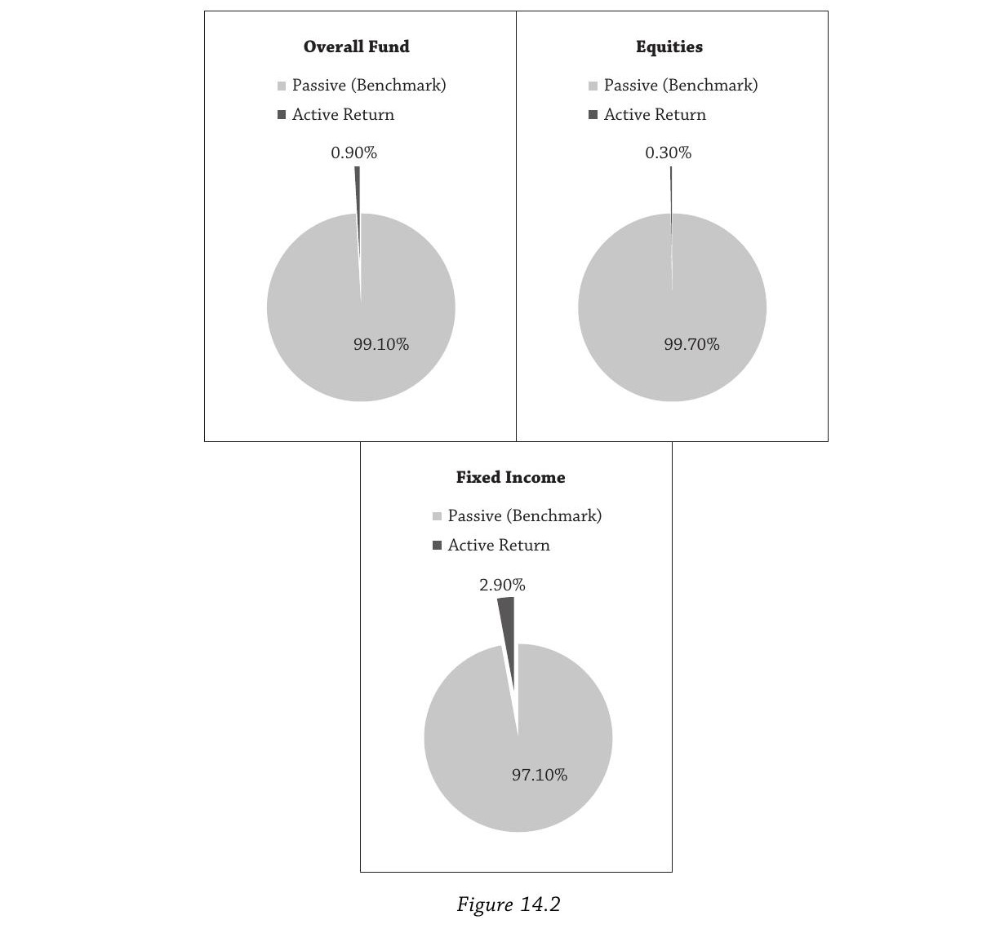
| 组合 | 被动基准解释 | 主动收益解释 |
|---|---|---|
| 整体基金 | $99.1%$ | $0.9%$ |
| 股票组合 | $99.7%$ | $0.3%$ |
| 固收组合 | $97.1%$ | $2.9%$ |
为什么挪威的比例如此极端？因为NBIM在极其严格的风险约束下运作，只允许非常微小的偏离基准。实质上挪威就是一个巨大的指数基金。
一个微妙的区分：如果你想解释自己的基金随时间的波动，资产配置是最重要的决策。但如果你想解释你相对于竞争对手的表现差异，主动下注就变得重要了——因为很多机构的资产配置策略相似（比如各大捐赠基金），区分哈佛和耶鲁某年谁赢的是主动决策。
§2.3 更精细的收益分解
进一步把主动收益拆分为择时和选股两个成分：
$r = \underbrace{r_{\text{bmk}}}{\text{基准}} + \underbrace{r{\text{timing}}}{\text{战术资产配置}} + \underbrace{r{\text{selection}}}_{\text{证券选择}} \tag{14.3}$
展开的完整形式是：
$r = \underbrace{\sum w_i^b r_i^b}{r{\text{bmk}}} + \underbrace{\sum (w_i - w_i^b) r_i^b}{r{\text{timing}}} + \underbrace{\sum w_i (r_i - r_i^b)}{r{\text{selection}}}$
其中 $w_i$ 是实际权重，$w_i^b$ 是基准权重，$r_i$ 是各资产类别的实际收益，$r_i^b$ 是基准中各资产类别的收益。这个分解的好处是可以把不同来源的收益归因到不同的责任方：在挪威的案例中，财政部负责基准决策，NBIM负责主动决策——后者又可以通过择时（调整股债比例）或选股（在股票/固收内部选出跑赢基准的证券）来创造超额收益。
还有一种以通胀为锚的分解，强调实际购买力：
$\underbrace{r - \pi}{\text{实际收益}} = \underbrace{(r_f - \pi)}{\text{实际现金收益}} + \underbrace{\sum w_i^b (r_i^b - r_f)}{\text{战略资产配置}} + \underbrace{\sum (w_i - w_i^b) r_i^b}{\text{战术资产配置}} + \underbrace{\sum w_i (r_i - r_i^b)}_{\text{证券选择}} \tag{14.5}$
这个视角下，战略资产配置本身也成了一个主动决策——你在选择哪些资产类别能跑赢无风险利率 $r_f$。挪威的目标是最大化国际购买力，议会设定约 $4%$ 的支出规则作为长期实际回报目标。公式 (14.5) 表明，议会和财政部在实际收益层面也在做主动决策：首先通过货币篮子选择现金收益，然后通过固定基准权重 $w_i^b$ 选择超越现金的资产类别回报 $r_i^b - r_f$。
§2.4 动态因子
这是整章最重要的概念之一。学术研究和长期投资经验发现了若干类证券长期跑赢大盘，将多头与空头组合即可收集动态风险溢价：
| 动态因子 | 多头 | 空头 |
|---|---|---|
| 价值-成长溢价 | 低估值股票（价值股） | 高估值股票（成长股） |
| 动量溢价 | 过去涨幅大的赢家 | 过去跌幅大的输家 |
| 非流动性溢价 | 流动性差的证券 | 流动性好的证券 |
| 信用风险溢价 | 高违约风险债券 | 安全债券 |
| 波动率风险溢价 | 卖出虚值看跌期权 | 用股票或看涨期权对冲为市场中性 |
动态因子的关键特征是去除了市场敞口。最优构建的价值-成长策略净掉了市场组合，只暴露于价值股与成长股的收益差。实践中如果不做空，市场敞口就无法完全去除——做空越少，因子组合与市场的相关性越高。Israel and Moskowitz（2013）显示即使不能做空，价值和动量因子溢价仍然显著，但盈利能力下降 $50%$–$60%$。
业界常用 smart beta、alternative beta、exotic beta 等术语指代动态因子。Ang坚持用"因子"——因为在资产定价理论中，beta 严格意义上是衡量对风险因子的敞口大小，我们投资的是因子，不是 beta。
每个因子定义了不同的"坏时期"
- 价值策略：在金融危机中被重创，在1990年代互联网泡沫中也被碾压——巴菲特、Grantham（GMO）、Robertson（Tiger）在那几年都成了"过时的落后者"。Grantham差点被迫卖掉公司，Robertson在2000年关闭了基金。
- 流动性策略：2008年商业票据、MBS（尤其是次级抵押贷款）、证券化固收产品、回购市场流动性枯竭时崩溃。
- 信用策略：投资者逃向安全资产时，风险债券暴跌、信用利差飙升。
- 波动率策略：VIX飙升时，卖出波动率保护的投资者遭受重创——十年的累积收益一夜归零。
- 动量策略：2009年春季，被动量策略做空的金融股因政府救助和量化宽松而反弹，动量组合暴跌。
因子溢价正是对这些周期性亏损的补偿。因子策略有风险，不适合所有人。
因子在大型组合中主导一切
在非常大的投资组合中，很难找到与因子无关的超额收益。很多错误定价机会（$\alpha$）不可扩展——小规模的低效率往往存在于不流动或信息不充分的市场角落。数千个相关的个股下注在组合层面汇聚成对因子的大额下注。Ang用了一个精妙的类比：农民可以选择土壤和条件最好的农场（选股），但如果发生严重干旱（因子），选了最好的农场也没用。
§2.5 因子归因
回到挪威。教授报告发现，约 $70%$ 的主动收益可以被系统性因子敞口解释。
Figure 14.3 有四个面板：
Panel A & B： 1998–2009年基金累积主动收益（Panel A）和流动性因子——on-the-run vs off-the-run 国债利差（Panel B）。Panel A 显示2008年前稳步积累到约 $4%$，金融危机一把抹平。Panel B 中流动性利差在1998年（俄罗斯违约/LTCM危机）和2008年底两次剧烈扩大。
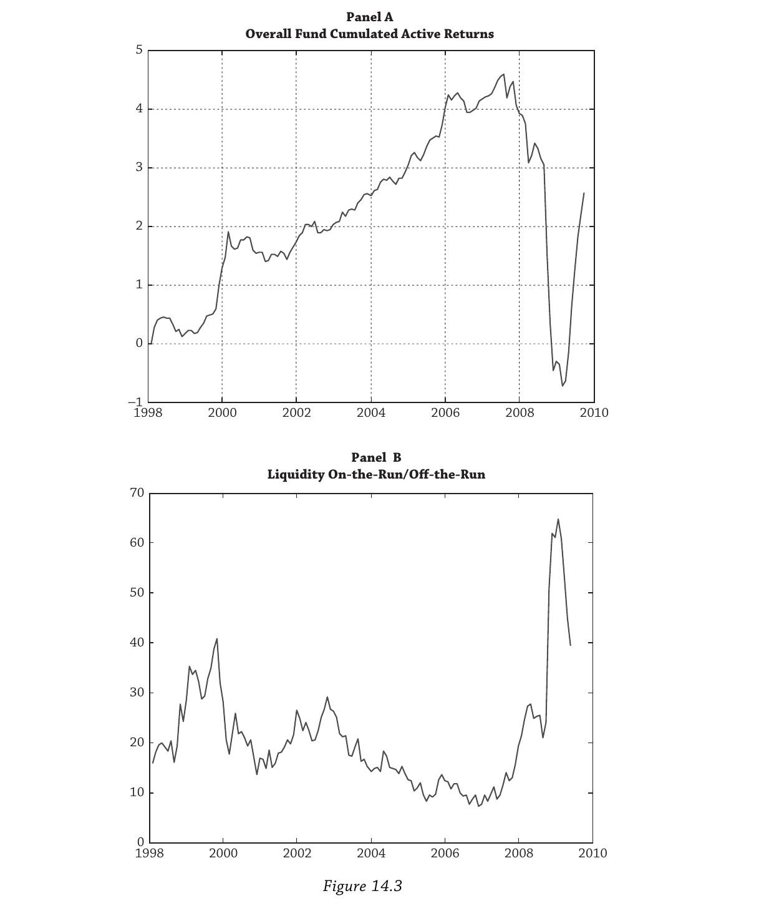
Panel C： 波动率因子（卖出波动率策略的累积收益）。十年的稳定积累在2008年一夜归零。
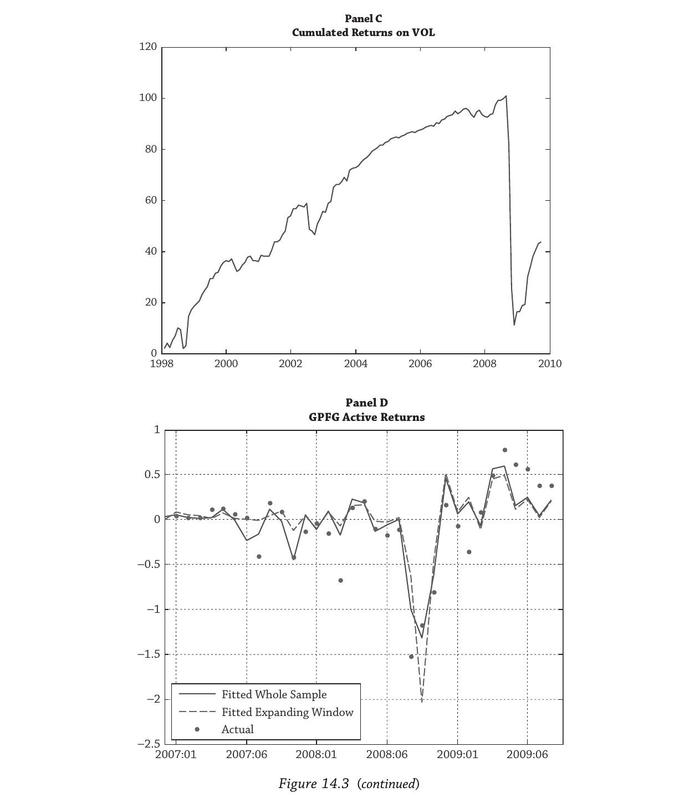
Panel D： 最关键的一张图——实际主动收益（散点）vs 因子敞口解释的主动收益（实线）。两条线（全样本估计 vs 滚动窗口估计）几乎重合，而且都很好地追踪了实际值：追踪危机前的稳定主动收益、跟随危机中的大幅亏损、也解释了2009年底市场稳定后的反弹。
Panel D 的含义是：如果事先正确沟通了基金的因子敞口，金融危机中的主动亏损就不会令人意外。 挪威人对股票头寸的亏损并不惊讶（因为了解下行风险），但对主动管理的亏损感到愤怒——因为没有被告知这些主动收益背后实际上是对流动性和波动率因子的系统性暴露。
教授报告的最终建议：挪威的主动收益有大量对系统性动态因子的敞口，长期来看收集这些风险溢价是合理的，但这些因子敞口不是刻意选择的结果。挪威应该自上而下、有意识地选择和控制因子敞口，将动态因子纳入基准。
§3 因子配方
上一节确立了"因子很重要"。这一节回答三个问题：选哪些因子？怎么从因子映射到资产？怎么决定你的因子配置？
§3.1 选择因子的四条标准
教授报告给挪威财政部列出了四条筛选准则：
标准一：有学术研究支撑。 因子必须有智识基础——要么有令人信服的理性逻辑（风险补偿故事），要么有行为金融学解释，最好两者兼有。不需要学术界对机制达成一致——金融经济学家连股权风险溢价的来源都吵不清楚（见第8章），但没人怀疑股票长期跑赢债券。按这条标准，价值-成长、动量、卖出波动率策略都合格。新研究可以识别新因子，也可以修正甚至否定已知因子。
标准二：历史溢价显著且预期未来持续。 不仅要理解溢价过去为什么存在，还要有理由相信它未来会延续。因子溢价是系统性的——来源于风险或行为倾向，即使所有人都知道这些因子、很多人在追逐同样的策略，溢价也可能持续（至少短期内）。
标准三：有"坏时期"的数据。 因子溢价存在的原因就是补偿坏时期的亏损。必须有足够的历史数据来衡量最坏情景，才能做风险收益权衡和风险管理。
标准四：可用流动工具实施。 因子策略应该极其便宜，最好用流动性证券构建。可扩展性对大型投资者尤其重要。因子策略通常需要杠杆——你要超配价值股同时低配或做空成长股。流动性约束并不意味着无法构建非流动性溢价因子——你可以在流动市场内部做多相对不流动的资产、做空相对流动的资产，而且资产类别内部的流动性溢价远大于跨资产类别的流动性溢价。
这四条标准刻意排除了"时髦的当红因子"。比如用社交网络数据预测收益的某些统计策略——这类东西最好留给主动管理，不应放进基准。一个因子只有被广泛认可后才应考虑纳入基准。很多我们今天认可的因子——如价值-成长和动量——最初被标记为异象（anomalies）或 $\alpha$，随着文献成熟和机构投资者的广泛接受，它们才升格为 $\beta$，或被视为独立的因子溢价。
因子可以出现，也可以消失
因子集合不是固定的。
出现的例子： 波动率因子在集中化期权交易（1960年代末）和 Black-Scholes（1973）之后才可大规模获取。高收益债（信用风险因子）在1970–80年代才兴起，主要归功于"垃圾债之王"Michael Milken。外汇 carry 因子只有在1970年代各国货币脱离金本位、自由浮动之后才能获取。
消失的例子：规模效应（size effect）。 Banz（1981）发现小盘股跑赢大盘股，学术上有合理解释——小盘股更不流动、分析师覆盖更少、经营缓冲更薄、处于更风险的经济部门。但自1980年代中期以来，调整市场风险后，规模溢价消失了。 小盘股确实收益更高，但这完全可以用它们对市场因子的更高暴露来解释。原因：小盘基金的创立让普通投资者也能参与承担规模相关风险——经济体的风险承担能力改变了，早期投资者享受了价格回归长期均衡的资本利得，此后就没有超额溢价了。
Ang预言低波动率异象（低风险股票回报异常高）可能走同样的路——随着大量低波动率产品被创设，早期投资者获利，异象最终消失。
§3.2 从因子到资产
这是一个思维方式的根本转变。Figure 14.4 展示了这个过程：左边是风险因子列表，右边是资产类别列表，箭头表示因子如何映射到资产。投资者应该先决定因子敞口，然后选择最便宜的资产工具来实施。
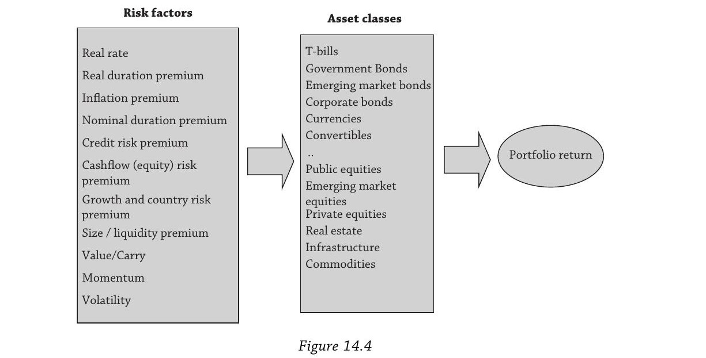
关键洞察：许多动态因子跨越资产类别边界。 同一个因子在不同资产类别中有不同的面孔：
| 因子逻辑 | 股票 | 外汇 | 固收 | 商品 |
|---|---|---|---|---|
| 买便宜卖贵（Value/Carry） | 价值-成长 | Carry（做多高息货币，做空低息货币） | 骑乘收益率曲线（买高收益长期债，卖低收益短期债） | 正滚动收益 |
| 追涨杀跌（Momentum） | 股票动量 | 外汇动量 | 固收动量 | CTA策略 |
| 卖保险（Volatility） | 股票期权 | 外汇期权 | 固收期权 | 商品期权 |
动量策略在股票、固收、外汇、房地产、商品中普遍存在——在资产类别内部和跨资产类别都成立，全球各地都是如此。唯一的例外是OTC股票市场，动量效应很弱。
§3.3 CPPIB的实践
加拿大养老金计划投资委员会（CPPIB）是因子投资的标杆案例，采用所谓的"全组合方法"（Total Portfolio Approach）。
基准极简：只有两个因子——股票和债券。 基准组合（称为 Reference Portfolio）是 $65%$ 股票 + $35%$ 债券，用12–15个人通过低成本指数基金管理。这些因子的选择确保基金有合理的概率满足加拿大养老金计划的负债。因子决策由CPPIB董事会在最高层做出。
但CPPIB持有大量私募股权、基础设施、房地产等"另类资产"。关键在于：CPPIB不把它们视为独立的资产类别，而是把它们拆解为股票和债券两个因子的组合。
Figure 14.5 展示了CPPIB如何用因子分解来"融资"另类投资：
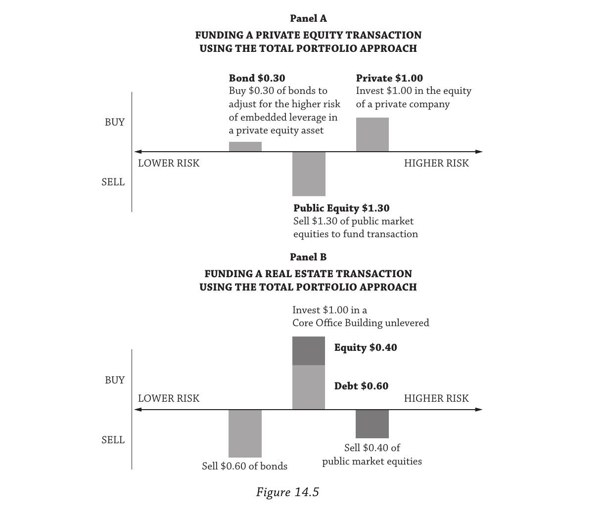
Panel A（私募股权交易）： $1 投入PE，经济上等价于 $1.30 公开股票 + $(-0.30)$ 债券。PE投资内嵌杠杆—— $-0.30$ 的债券空头就是对这个杠杆的会计处理。买入PE时，CPPIB同时从 Reference Portfolio 中卖出 $1.30$ 股票、买入 $0.30$ 债券来"融资"。
Panel B（房地产交易）： $1 投入房地产 $= 0.40$ 股票 $+ 0.60$ 债券。房地产的风险特征更偏债——杠杆低于PE。
Panel C（实际资产 vs 经济敞口）： 这是理解因子投资最直观的对照表。
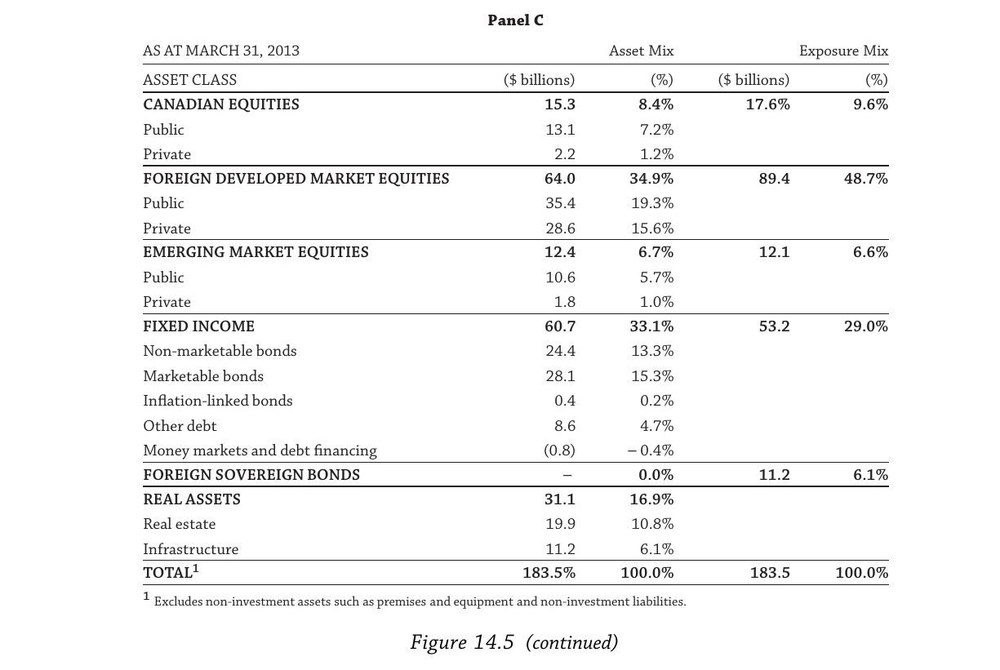
截至2013年3月，CPPIB管理 CAN$1835 亿，几个关键对比：
| 类别 | 资产持有（Asset Mix） | 经济敞口（Exposure Mix） |
|---|---|---|
| 外国主权债券 | $0.0%$ | $6.1%$ |
| 房地产+基础设施 | $16.9%$ | $0.0%$ |
| 外国发达市场股票 | $34.9%$ | $48.7%$ |
CPPIB持有 $0.0%$ 外国主权债——但通过房地产、PE、基础设施间接获得了 $6.1%$ 的经济敞口。反过来，$16.9%$ 的房地产+基础设施在因子分解下经济敞口为 $0.0%$——它们只是股票和债券因子的载体。外国发达市场股票的经济敞口（$48.7%$）远高于直接持有量（$34.9%$），因为包含了从另类资产中分解出来的隐含股票敞口。
治理结构的关键性： 管理层对偏离 Reference Portfolio 的每一分钱负责。前CEO David Denison 说："如果我们想建立房地产团队，我们必须收回那个成本。那些额外的支出值得吗？我们必须确信它能产生扣除成本后的增量回报。" 管理层产生的超越因子敞口的超额收益才是真正的 $\alpha$，才能证明雇佣900多名全球员工做主动管理的合理性。
CPPIB独立于政治干预——董事会没有政府官员，不需要政府批准投资策略或薪酬政策，改变其独立章程"比修改加拿大宪法还难"。
一个合理的批评：CPPIB做得还不够远。 Reference Portfolio 只有静态因子（股票和债券），还没有纳入动态因子。
§3.4 你与平均投资者有何不同？
这是全章的哲学核心。
市场先生（Mr. Market） 是典型的平均投资者——市场组合是所有可交易证券按市值加权的被动集合。平均投资者不收集任何动态因子溢价，因为市场先生持有所有证券且不做连续交易。
如果你就是平均水平——你做完了！ 用低成本指数基金持有市场组合，你就能跑赢三分之二的主动管理人（第16章）。CAPM说得对的一点是：市场组合是你能被动构建的最分散化的组合。
但如果你不同于平均，你就不应持有市值加权组合。 核心问题是：
"How are you different from average?"
每个因子定义了不同的"坏时期"。投资者应该问：这个因子的"坏时期"对我来说也是坏时期吗？如果是，它对我的伤害比对普通市场参与者更轻还是更重？
三步因子配置流程
第一步：识别你的比较优势和劣势。 教授报告列举了挪威的比较优势：(1) 透明度和长期授权 (2) 大规模 (3) 长期限且没有即时现金负债 (4) NBIM能干、有公共服务精神、缓解委托代理问题。劣势：大规模意味着小规模 $\alpha$ 机会对整体组合无足轻重；如果是捐赠基金，也许承受不起大亏损（哈佛就曾因此发不出工资）。
第二步：评估每个因子"坏时期"下你的风险承受力。 这本质上是你对每个因子的风险厌恶程度。如果你对某个因子的坏时期极度厌恶——承受不起任何亏损——那你应该反向持有该因子。比如买入波动率保护而非卖出，或者做成长而非价值。
第三步：再平衡！ 市场先生永远不再平衡——对每个低买高卖的人，必有高买低卖的对手方。金融危机中 CalPERS 在股价最低、预期回报最高时卖出了股票。谁在另一边？挪威——2008年四季度全球最大的股票买家。
再平衡很难，因为行为偏差让投资者最容易在一连串亏损后放弃因子策略——而这恰恰是预期回报最高的时候。如果你擅长再平衡，可以进一步做因子择时——很多因子有（微弱的）可预测性，你可以利用估值信息，在因子策略变得极度便宜时增加敞口。再平衡已经迫使你低买高卖；因子择时让你在低点买入更多。
Vanguard至今没有推出纯动量因子基金，就是因为散户很可能在因子择时上赔掉裤子。前CIO Gus Sauter 说："我们的数据表明，对于窄定义的投资，投资者在上涨途中没有买入，在顶部蜂拥而入，然后一路坐到底。" 初始配置到因子策略是不够的——你必须有信念去再平衡。
CAPM作为因子配置的特例
CAPM是展示这个流程最简单的例子。Figure 14.6 中，投资者在无风险利率 $r_f$（纵轴截距）与市场组合（圆圈）之间组合，描出资本配置线（CAL）。
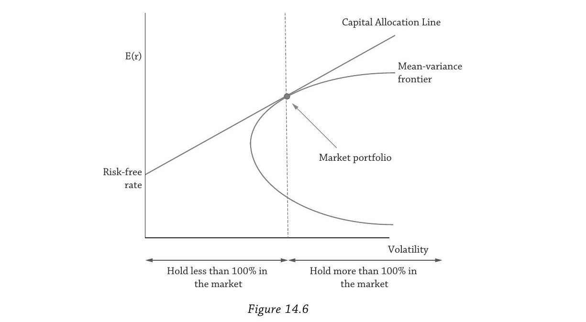
- 市场先生持有 $100%$ 市场组合（$\beta = 1$）
- 比市场更风险厌恶 → 配置少于 $100%$ 的市场 + 部分 T-bills，位于市场组合左侧（$\beta < 1$），接受更低的平均收益换取安全性
- 比市场更风险偏好 → 杠杆做多市场组合 + 做空 T-bills，位于市场组合右侧（$\beta > 1$），能承受更多痛苦因此赚取更高回报
均衡中，每个比市场先生更风险厌恶的人都被一个更风险偏好的人所平衡。
价值-成长的因子配置思考
以价值-成长为例。有两类理论：
理性故事定义了价值股跑输成长股的不同"坏时期"。有些描述市场组合整体表现差的情境（条件CAPM），有些定义为低投资增长或"长期"消费增长低的时期。问你：在这些时期，你能否比市场更轻松地承受价值-成长策略的亏损？如果能，价值-成长适合你。
行为故事认为价值股被忽视，因为投资者过度关注高飞的成长股，过度外推过去的高增长率到未来，导致成长股被高估、价值股被低估。问你：你是否容易被新闻中的热门股票吸引？如果是，你不适合价值投资。反过来，如果你能忍受投资于不受待见的、接近困境的股票，价值投资可能适合你。
这与把价值-成长因子塞进均值-方差优化器截然不同。我们从资产所有者的需求和特征（效用函数）出发，比较他的"坏结果"与因子定义的"坏时期"。这需要对风险溢价存在原因的经济理解，而非仅仅是统计优化。
§3.5 小结
因子投资就是比较你对"坏时期"的感受与平均投资者的感受。如果你是平均的——持有市场组合，没有任何问题。如果你不同于平均，向动态因子倾斜——持有那些你能比普通投资者更轻松承受其"坏时期"的因子。或者反向持有因子——等价于购买对抗因子亏损的保险。
§4 动态因子基准
§3回答了"选什么因子、为什么选"。§4回答操作层面的问题：动态因子基准长什么样？怎么构建？谁来决定？
§4.1 机制：三只股票的例子
动态因子意味着非市值加权的持仓，且持仓随时间变化。用一个极简例子演示。
初始状态： 三只股票——"成长股"、"中性股"、"价值股"，市值权重分别为 $20%$、$50%$、$30%$。投资者想要 $100%$ 股票配置加上 $5%$ 的价值-成长因子敞口。
| 市场组合 | 价值-成长因子 | 基准组合 | |
|---|---|---|---|
| 价值股 | $0.20$ | $+0.05$ | $0.25$ |
| 中性股 | $0.50$ | $0$ | $0.50$ |
| 成长股 | $0.30$ | $-0.05$ | $0.25$ |
| 权重之和 | $1.00$ | $0.00$ | $1.00$ |
价值-成长因子是零成本组合（权重之和为零）。基准组合超配了价值股、低配了成长股。$0.05$ 这个敞口大小由投资者自己决定。
动态更新： 假设价值股表现好，价格上涨变成"新中性股"（市值权重 $0.20 \to 0.40$）。原中性股价格下跌变成"新价值股"（$0.50 \to 0.30$）。成长股不变（$0.30$）。因子组合随之更新：
| 市场组合 | 价值-成长因子 | 基准组合 | |
|---|---|---|---|
| 新中性（原价值） | $0.40$ | $0$ | $0.40$ |
| 新价值（原中性） | $0.30$ | $+0.05$ | $0.35$ |
| 成长股 | $0.30$ | $-0.05$ | $0.25$ |
| 权重之和 | $1.00$ | $0.00$ | $1.00$ |
纯市值加权基准不会捕捉到这种动态变化。因子基准会。
这揭示了动态因子基准的三个关键特征：
- 因子敞口大小由投资者设定（这里是 $5%$）
- 基准不再是市值加权，而是反映投资者期望的因子敞口
- 基准是"被动的"又是"动态的"——"被动"指基于系统性规则而非主观判断，"动态"指组合成分随时间变化
如果价值-成长的敞口设得足够大，基准组合中某些权重可能变为负数——这就需要动态杠杆。
§4.2 GM Asset Management的实践
GM Asset Management（通用汽车养老金的管理人）自建了价值和动量的动态因子组合。
构建细节： 投资宇宙为机构可投资范围；不做空——低配或零权重替代做空；价值指标取 Book/Price、前瞻 Earnings/Price、Price/Sales、滞后 Earnings/Price、滞后 Cash Flow/Price 的均值；动量指标为过去12个月收益率（剔除最近1个月以避免短期反转效应）；月度再平衡，低换手率设计；因子敞口刻意保持较小（严格的跟踪误差）。
评估管理人： 用自建因子组合作为基准，对所有股票管理人做回归：
$r_{\text{active}} = r - r_{\text{mkt}} = b_0 + b_1 r_{\text{mkt}} + b_2 r_{\text{size}} + b_3 r_{\text{value-growth}} + b_4 r_{\text{momentum}} + \varepsilon \tag{14.6}$
其中 $r_{\text{mkt}}$ 是标准市值加权基准，$r_{\text{size}}$ 用 Russell 2000 减 Russell 1000 代理，$r_{\text{value-growth}}$ 和 $r_{\text{momentum}}$ 是自建因子组合的收益。学术界会认出这就是 Fama-French（1993）+ Carhart（1997）的业界版本。
各系数含义和理想取值：
| 系数 | 含义 | GM理想值 | 理由 |
|---|---|---|---|
| $b_0$ | 真正的 $\alpha$（选股能力） | $> 0$ | 扣除所有因子后仍有超额收益 |
| $b_1$ | 市场敞口 | $\approx 0$ | 不要过度承担市场风险 |
| $b_2$ | 规模敞口 | $\approx 0$ | 规模效应已消失 |
| $b_3$ | 价值-成长敞口 | $> 0$ | 价值溢价值得收集 |
| $b_4$ | 动量敞口 | $> 0$ | 动量溢价值得收集 |
一个有趣的细节：GM Asset Management 只在内部使用因子基准来评估管理人，不把因子基准交给管理人本身——大多数基金经理对同时包含价值和动量的基准感到极不舒服。
§4.3 提高主动管理的门槛
在理想的因子投资实施中，我们给所有管理人定制化的因子基准：
| 管理人类型 | 因子基准 |
|---|---|
| 私募股权经理 | 股票市场 + 债券市场 + 流动性 + 信用因子 |
| 公司债经理 | 债券市场 + 信用 + 波动率因子 |
| 价值型股票经理 | 股票市场 + 价值-成长因子 |
纳入因子敞口后，主动管理的门槛被大幅抬高。我们愿意为真正创造价值的主动管理人付高薪，但必须确保他们产生的收益——扣除费用后——高于用低成本动态因子基准能获得的。
§4.4 风险-收益因子分析
因子配置的一个重要步骤是考察不同因子敞口下的组合收益分布。教授报告对NBIM隐含的因子权重以及更保守/更激进的配置做了模拟。
关键发现：因子配置通常产生高度左偏的收益分布——大部分时间收益稳定为正，但偶尔产生非常大的亏损。这跟"因子溢价补偿坏时期"的逻辑完全一致。投资者需要看到这些潜在极端损失作为因子敞口大小的函数，才能校准持仓。大多数投资者对下行的厌恶大于对上行的喜爱（损失厌恶），所以 Ang 建议重点关注下行风险度量。
§4.5 因子与治理
挪威几乎无人质疑因子的重要性。关键挑战是：谁来设定因子敞口？
Figure 14.7 展示了一个三层时间框架：
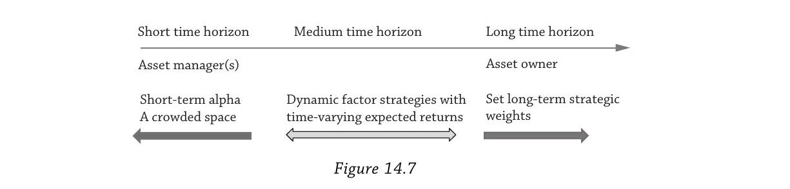
| 时间范围 | 决策内容 | 责任方 |
|---|---|---|
| 长期 | 战略因子权重（股债比例等） | 资产所有者（董事会/议会/受托人） |
| 中期（2–5年验证周期） | 动态因子策略 | 灰色地带 |
| 短期 | $\alpha$（选股、择时），竞争激烈 | 资产管理人 |
动态因子策略居于中间——价值策略在1990年代末连续五年跑输市场。很多短期管理人实际上在收割因子溢价（有时伪装成 $\alpha$）。如果资产所有者不知道因子敞口，因子表现差时就会愤怒和意外——正如挪威2008年的情况。因子基准不会因为因子表现差而惩罚管理人——它只评估管理人在因子基础上创造的额外价值。
如果资产所有者和管理人都不对动态因子负责，问题就来了。 很多资产所有者在2008年大亏后直接放弃了波动率策略——而那恰恰是反周期投资者应该增加敞口的时刻。把动态因子纳入基准能帮助资产所有者坚持长期承诺。
丹麦最大养老基金 ATP 是正面案例：它把投资组合分为利率、信用、股票、通胀挂钩资产、商品等因子组，按风险分配再平衡（一种风险平价），并实施因子择时——因子策略变便宜时增加敞口，反周期投资。
§5 宏观因子投资
前面§3–§4走的是投资风格（style）路径——因子是可交易的策略。§5介绍另一条路径：基于不可交易的宏观经济变量构建因子框架。 Ang坦言这条路学术上更纯粹，但实操上难得多。
为什么难？
资产类别不会与宏观因子一对一挂钩，很多关系甚至违反直觉。股票理论上应该对冲通胀——但实证上是极差的通胀对冲工具。房地产好一些但也只是部分"real"。债券价格反映通胀风险，但同时受货币政策风险和流动性风险驱动。
要走宏观因子路线，需要一个框架来描述宏观因子如何同时影响多个资产类别。
学术模型
Ang and Ulrich（2012）模型：实际债券、名义债券和股票由两个宏观因子——通胀和经济增长——加上一个美联储货币政策因子共同决定。经济增长解释了约 $60%$ 的股权风险溢价变动，预期通胀解释了 $40%$ 的实际利率变动和 $90%$ 的名义债券变动。
Bridgewater的全天候策略
实践中最著名的宏观因子框架。Figure 14.8 展示了一个 $2 \times 2$ 矩阵，两个维度是经济增长（上升/下降）和通胀（上升/下降），每个象限分配 $25%$ 的风险预算：
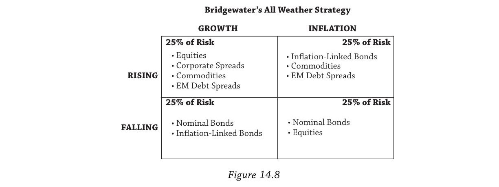
| 增长上升 | 增长下降 | |
|---|---|---|
| 通胀上升 | 商品、通胀挂钩债、新兴市场债（25%风险） | 通胀挂钩债、商品（25%风险） |
| 通胀下降 | 股票、公司信用利差、新兴市场债（25%风险） | 名义债券、股票（25%风险） |
逻辑：名义债券在增长和通胀双降时表现好（利率下行）；股票在增长高、通胀低时表现好；商品和通胀挂钩债券在通胀上升时提供保护。这显然比正式学术模型粗糙得多，但核心思路相同。
Ang提到桥水在金融危机期间偏离了原定策略——提醒我们设计框架容易，在坏时期坚持执行才是真正的考验。
阿拉斯加永久基金
Table 14.9 展示了阿拉斯加主权财富基金按宏观因子响应方式分组的资产配置：
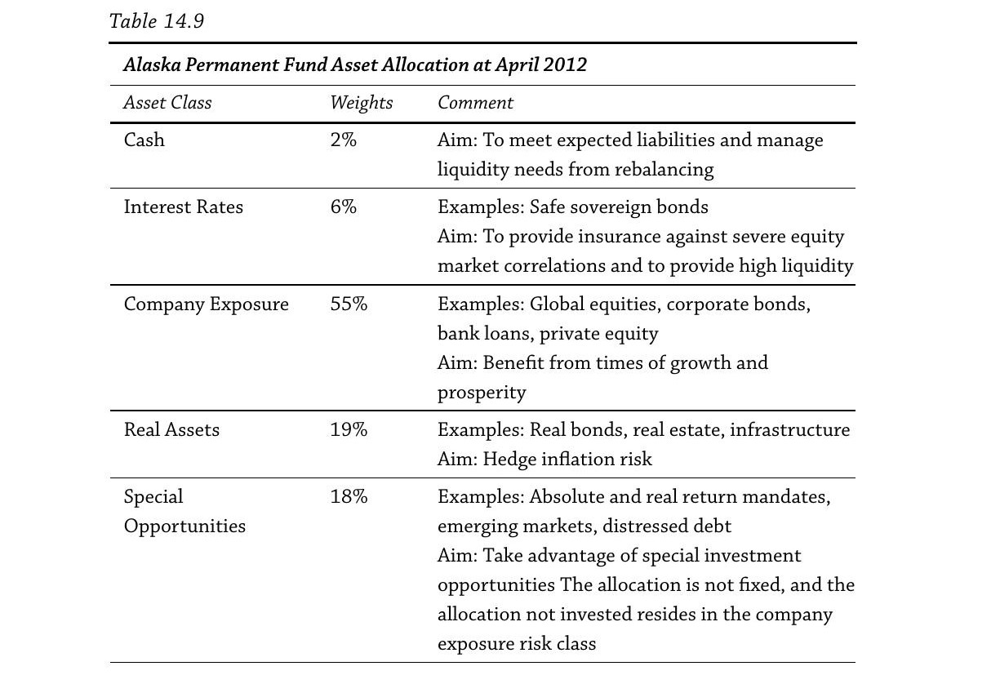
| 类别 | 权重 | 包含资产 | 宏观逻辑 |
|---|---|---|---|
| 现金 | $2%$ | 现金 | 满足负债和再平衡的流动性需求 |
| 利率 | $6%$ | 安全主权债 | 对冲严重股市下跌的保险，提供高流动性 |
| 公司敞口 | $55%$ | 全球股票、公司债、银行贷款、PE | 受益于经济增长和繁荣 |
| 实物资产 | $19%$ | 实际债券、房地产、基础设施 | 对冲通胀风险 |
| 特殊机会 | $18%$ | 绝对收益、新兴市场、困境债 | 利用特殊投资机会 |
两个亮点：
第一，公司债和股票被放在同一类——不按传统的"股票/固收"分，而按对宏观因子的响应方式分。公司做得差时，股东和债券持有人都受损。Baa级公司债与股票的超额收益相关性达 $48%$，高收益债更达 $65%$。在宏观因子视角下，它们不是独立的资产类别。
第二，特殊机会类对应 Merton（1971）长期投资模型中的"机会性组合"——长期投资者除了持有短期最优的"近视组合"，还应持有一个利用时变预期收益的机会性组合。当出现困境资产的好机会时出击；没有好机会时资金回流到公司敞口类。
宏观因子投资透过资产标签，按资产对经济增长、通胀等宏观变量的响应方式分类。它与§3–§4的风格因子路径互补——一个从交易策略出发，一个从经济状态出发，最终都在问同一个问题：你的组合在不同"坏时期"情景下会怎样表现？
§6 主权"无风险"债券
这一节处理一个特殊案例：因子投资的标准方法——从市场组合出发再偏离——对主权债券不适用。
§6.1 不应持有市值加权的主权债券
在简单经济模型中，政府发行的安全资产是零净供给的——对每一个持有国债多头的人，有人在提供对应的空头。无风险资产的价格有意义，但这是借贷双方的契约价格，不代表真实财富。所有风险资产（股票、公司债等）才是正净供给、代表真实财富的。
李嘉图等价（Ricardian Equivalence）进一步说：政府负债迟早要还（"现在征税还是以后征税"），跨代汇总后政府债务不是净财富。当然现实远比简单模型复杂，但基本结论成立：市值加权对主权债券没有意义。
§6.2 安全资产中的因子
主权债务跟其他资产一样是因子的打包——但太多因子同时作用，且方向经常矛盾。用三个国家（挪威、美国、巴西）来演示排序如何在每个维度上翻转：
| 因子维度 | 排序（从优到劣） | 说明 |
|---|---|---|
| 信用风险 | 挪威 > 美国 > 巴西 | 零违约风险为理想；主权违约概率约 $2%$–$4%$，haircut 约 $30%$–$75%$。美国也违约过两次（1934年废弃金条款、1979年国库券利息延迟支付） |
| 抵押品功能 | 美国 >> 挪威/巴西 | 美国国债是全球最大的抵押品来源（回购、衍生品市场） |
| 交易媒介（流动性） | 美国 >> 挪威/巴西 | 安全资产像货币一样促进交易 |
| 经济增长 | 巴西 > 美国/挪威 | 高增长让国家更可能履约 |
| 通胀（对投资回报） | 巴西 > 挪威 > 美国 | 高通胀国家有更高的通胀风险溢价 |
| 储备货币地位 | 美国 >> 挪威 >> 巴西 | 美元的"过度特权"（exorbitant privilege） |
三个国家在每个维度上的排序都不同！ 有人看重安全性，有人看重流动性，有人看重投资回报。市值加权捕捉不了任何一个效应。
Figure 14.10 三个面板分别画出美国、欧元区、日本的三种权重对比：市值权重、COFER权重（各国央行外汇储备的实际配置）、GDP（PPP）权重。
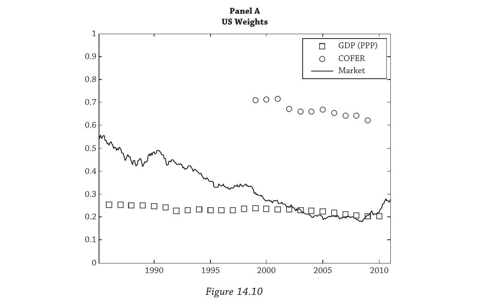
Panel A（美国）： 对美国国债的储备需求远高于市值权重。市值权重自1985年以来持续下降（金融危机后因大量发债略有回升）。
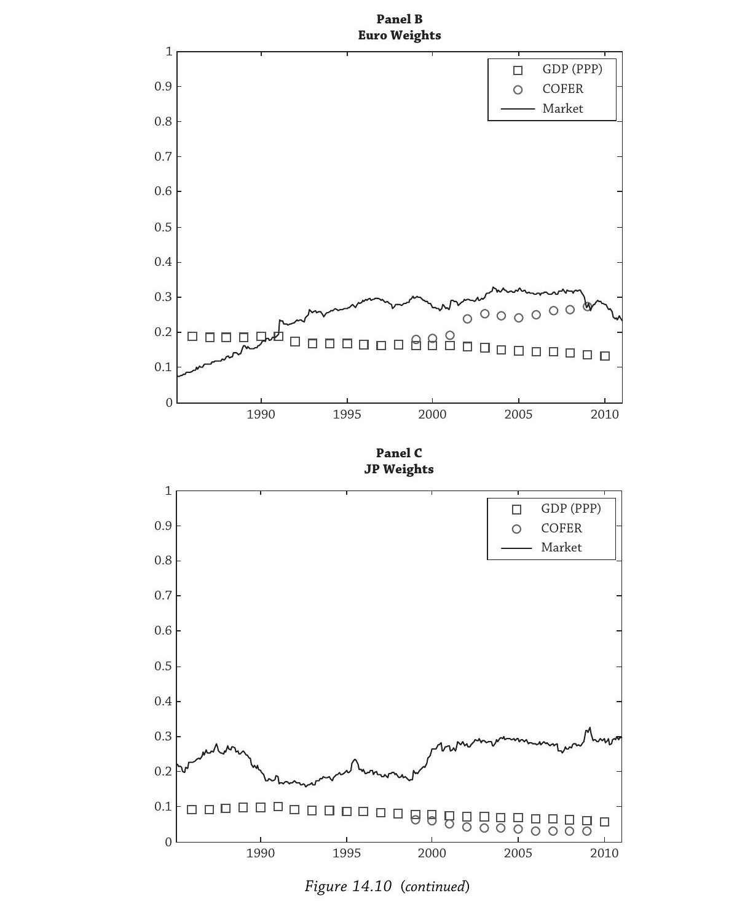
Panel B（欧元区）： 市值权重远高于储备需求，也高于欧元区在全球经济中的份额。
Panel C（日本）： 日本市值权重约 $30%$，但日本在全球经济中的份额不到 $10%$ 且在萎缩。
三种权重方案给出截然不同的结果，进一步证明市值加权对主权债不合适。
§6.3 安全资产的加权方案
Table 14.11 是实证分析：
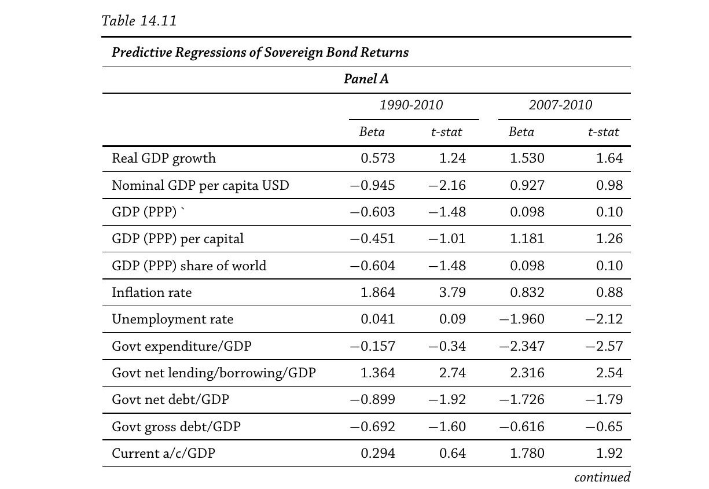
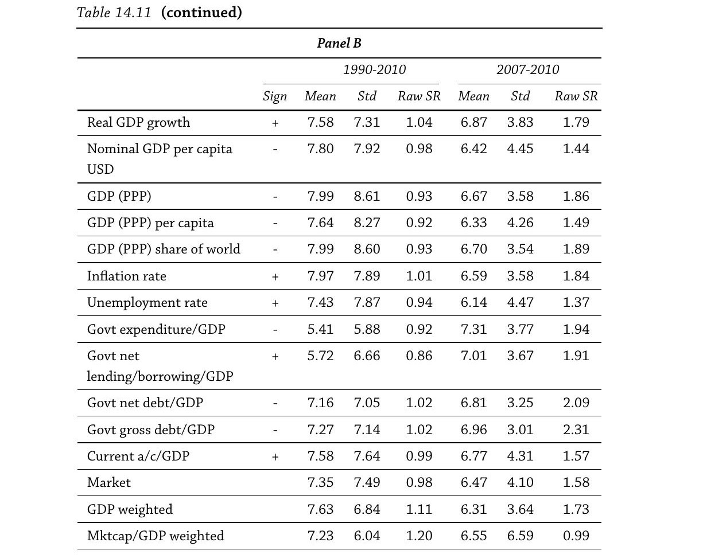
Panel A（预测回归）： 用各种宏观变量预测主权债券收益。通胀率越高的国家回报越高（通胀风险溢价显著，$t=3.79$）；政府净贷/GDP越高（即财政越健康）回报越高；政府净债/GDP越高回报越低。
Panel B（各种加权方案的表现）： 基于 Panel A 的预测系数方向，超配宏观基本面有利的国家。结果：
| 加权方案 | 1990–2010 Raw SR | 2007–2010 Raw SR |
|---|---|---|
| 市值加权 | $0.98$ | $1.58$ |
| GDP加权 | $1.11$ | $1.73$ |
| 政府净债/GDP（低配高债务） | $1.02$ | $2.09$ |
| 政府总债/GDP（低配高债务） | $1.02$ | $2.31$ |
| 通胀率（超配高通胀） | $1.01$ | $1.84$ |
市值加权表现其实不差，但向高增长、高通胀、低债务/GDP倾斜的方案能做得更好。金融危机后GDP加权表现突出——这解释了GDP加权近年的流行。
但Ang对GDP加权的批评非常尖锐： "GDP加权是一个寻找问题的解决方案（GDP weights are a solution in search of a problem）。" 你想用GDP加权捕捉什么因子？如果是偿付能力/信用风险，应该用偿债率或政治风险指标。如果是投资回报潜力，应该设计基于宏观预测因子的回报增强指数。如果是流动性，最大GDP国家通常有更流动的债市。如果想超配高增长国家，应该用GDP增长率而非GDP水平。
§6.4 最优安全资产权重
正确做法是回到因子投资框架：列出对你最重要的因子（流动性？信用安全？储备地位？回报潜力？），按这些因子的相对重要性确定国家权重。市值加权或GDP加权大概率不会做到这一点。
单一国家内部的期限结构也有同样的问题。Figure 14.12 画出了2011年底美国所有国债的市值分布：
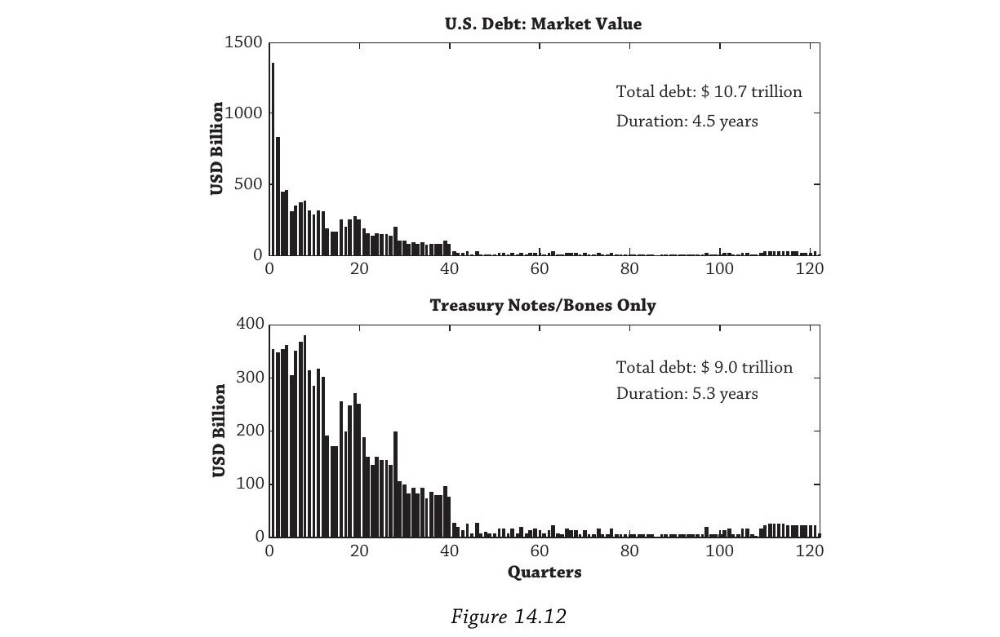
市值高度集中在短期限——因为美国财政部大量发行短期债务。如果用市值加权，你的期限结构就被财政部的发行偏好绑定了。
固收中最重要的因子是水平因子（level factor）——跨期限的平均利率，解释了 $90%$ 以上的安全资产收益和收益率变动。你可以用少数几只跨期限的债券构建水平因子组合，然后选择合适的久期目标。大多数投资者实际上从未持有固收指数中的所有债券——他们用因子复制来追踪固收指数，持有的债券数量远少于指数成分但追踪效果很好——正是因为因子在固收中的主导地位。
§7 被动-激进的挪威：续篇
最后一节回到故事的起点，交代后续进展。
2009年教授报告之后，NBIM在致财政部的信中承认："主动管理会或多或少地暴露于系统性风险因子。系统性风险的管理和控制必须成为我们管理任务的一部分。" 但NBIM希望因子决策由自己控制——2012年致财政部的信中写道："投资策略应设计为能够动态收割风险溢价。……挪威银行认为战略基准指数不应调整以考虑股票投资的系统性风险溢价。"
截至写作时，财政部尚未最终决定动态因子决策应在资产所有者层面（议会）还是管理人层面（NBIM）做出。但NBIM已经先行一步：2012年引入了包含系统性风险因子的运营基准——两个因子：价值-成长和规模。（Ang认为规模单独不产生超越市场敞口的溢价。）
Robeco的David Blitz等实践者已经把被动收割动态因子溢价命名为**"挪威模型"（the Norway Model）**。
Ang在教授报告的公开展示中总结因子投资的定位：
"被动但动态的（passive but dynamic）"和"指数但主动的（index but active）"。
因子投资用强大的历史和学术基础、以低成本方式获取回报。它可扩展，简单且不涉及非流动资产市场的代理问题和信息不对称。它让投资者只为真正无法被动获取的主动管理付费。很多投资者可以考虑跟随挪威，以便宜的被动方式激进地收割动态因子风险溢价。
全章逻辑总结
$\boxed{\text{挪威的教训}} \to \boxed{\text{因子解释收益}} \to \boxed{\text{选因子、因子→资产}} \to \boxed{\text{动态因子基准}} \to \boxed{\text{宏观因子路径}} \to \boxed{\text{主权债特殊性}} \to \boxed{\text{挪威的实践}}$
贯穿始终的核心问题只有一个：
相对于平均投资者，你在每种因子的"坏时期"中承受损失的能力有何不同？这决定了你应该持有哪些因子、持有多少。